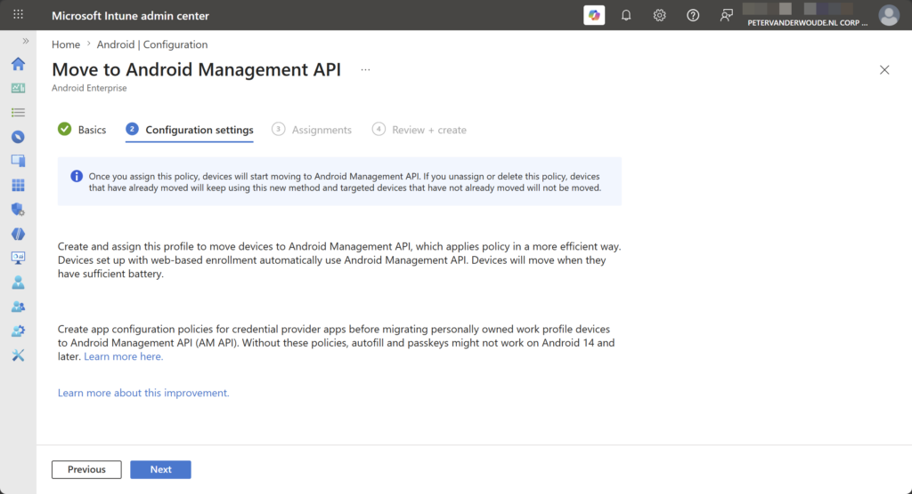
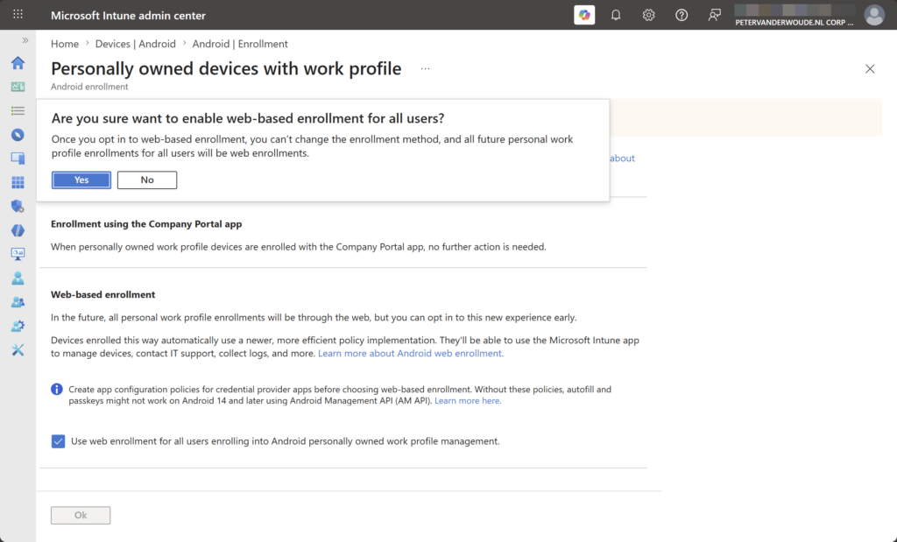
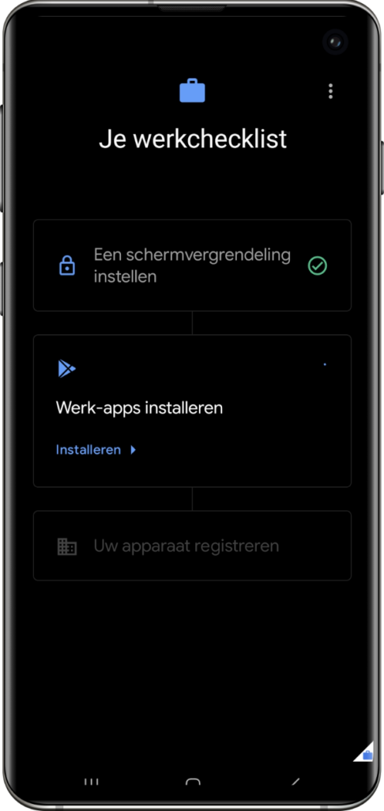
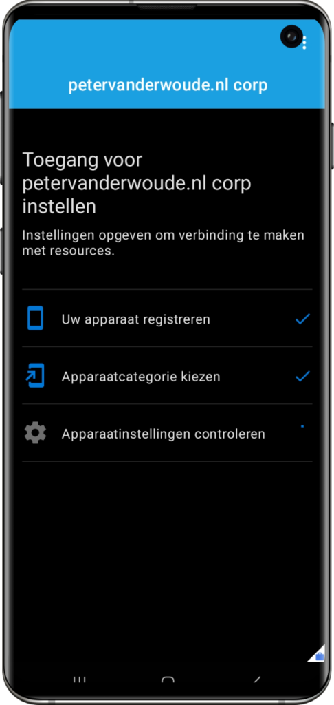
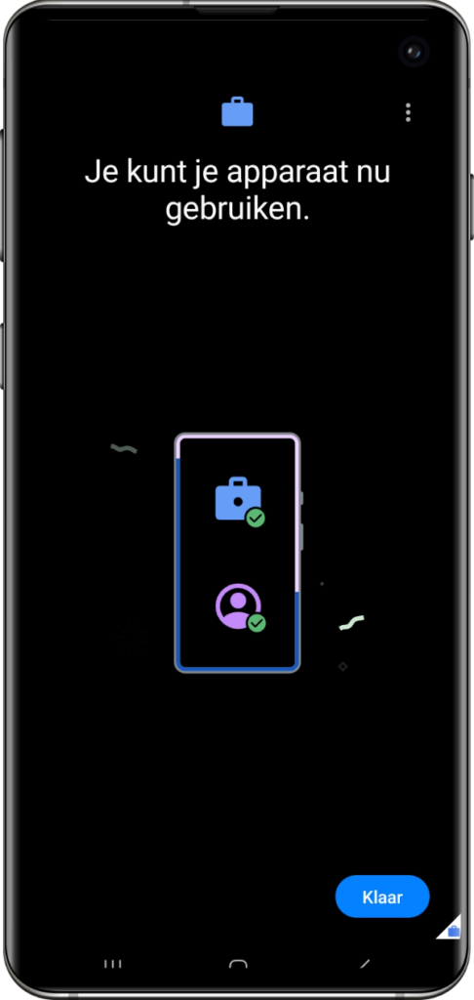

This week is all about the move of Android personally-owned devices to the Android Management API (also known as AMAPI). The Android Management API is the API that is already being used for all the different corporate-owned device flavors that might exist already within the environment. That API is the recommended path for Android device management, by Google. With that API, Google also provides its own companion app Android Device Policy. That means that it is no longer required to create and maintain a custom device policy controller (DPC) to talk to an API. Together, that should help with faster availability of new features and consistency between the all different Android Enterprise management flavors, as all of those flavors are now managed via the same API. That also means that the Microsoft Intune app will become the user facing app for device management, personally-owned devices as well. On top of that, this move also enables a web-based enrollment experience that is similar to personally-owned iOS devices. This post will look at configuring this new management experience for existing devices and new devices, followed with the user experience during the enrollment of new devices.
Note: Keep in mind that the Company Portal app is still required for mobile application management.
Migrating existing devices to the Android Management API
When looking at existing Intune managed personally-owned Android devices, it is all about looking at the migration path. Mainly because that enables the IT administrators to manage all of those device in the same manner. Luckily, that path is available. Microsoft created a device configuration policy that can be used to migrate those devices to the Android Management API. It is good, however, to keep in mind that the migration is a one-way street. Once migrated, there is no way back. That is why it is important to start small, test the experience, and notify the user about upcoming changes. The configuration of that migration policy is pretty straightforward and can be achieved by going through the following seven steps.
- Open the Microsoft Intune admin center portal and navigate to Devices > Android > Configuration
- On the Android | Configuration blade, click Create > New Policy
- On the Create a profile blade, select Android Enterprise > Move to Android Management API and click Create
- On the Basics page, provide at least a unique name to distinguish it from similar profiles and click Next
- On the Configuration settings page, as shown below in Figure 1, click Next
{kind=link}

- On the Assignments page, configure the assignment for the required devices and click Next
- On the Review + create page, verify the configuration and click Create
Note: This configuration policy does not contain any settings, the configuration is done by Intune.
Once the policy is assigned to the required devices, those devices will start migrating to the Android Management API. That process sis performed without unenrolling the device, while the user keeps access to corporate resources throughout the whole process. During that process, the Microsoft Intune app is silently installed and becomes the primary user app. On top of that, the Android Device Policy app installs, in a hidden state, to enforce Android Management API policies.
Note: Keep in mind that Wi-Fi access might be affected relying on username/password authentication.
Using web-based enrollment for new devices
When looking at personally-owned Android devices that are not yet enrolled, it is all about the enrollment process. The move towards using the Android Management API enables a new web-based enrollment flow. That enrollment flow provides a similar experience as the web-based enrollment flow that is already available for iOS devices. In the near future, that enrollment flow will be the default enrollment experiences for personally-owned Android devices. At this moment, however, that new web-based enrollment flow must still be enabled. That configuration is sort of an opt-in, but with no reverse option. Besides that, it is a tenant-wide configuration, so, make sure to carefully test the experience in a separate tenant and document the new enrollment steps for the users and the service desk. The following steps walk through that enablement process.
- Open the Microsoft Intune admin center portal and navigate to Devices > Android > Enrollment > Personally owned devices with work profile
- On the Personally owned devices with work profile page, as shown below in Figure 2, check the box with Use web enrollment for all users enrolling into Android personally owned work profile management., that opens the confirmation message of Are you sure want to enable web-based enrollment for all users?, click Yes to confirm and click Ok
{kind=link}

Note: Keep in mind that this configuration cannot be undone and somewhere in Q42026 this will be the default.
Experiencing the new web-based enrollment
When the configurations are in place, the most interesting to look at is the new web-based enrollment experience. The migration experience will only visually show the new Microsoft Intune app to the user. So, that whole process is mainly communication with the users. The new web-based enrollment experience, however, brings some changes to the enrollment process. The main thing being that the user does not need to download the Company Portal app first anymore. But it can still be done. To trigger the enrollment process, the user now has the following options.
- Enrollment URL: Navigate to https://aka.ms/enrollmyandroid and follow the flow.
- Productivity apps (preferably Teams or Outlook): Open the app and follow the flow (when Conditional Access requires a managed and compliant device.
- Company Portal app: Download and install the Company Portal app and follow the flow.
The easiest methods to start the new enrollment experience is by simply navigating to the enrollment URL. That will tell the user how to start the enrollment process (see also the feature image). After that the user simply has to follow the enrollment flow. There is no need to manually download the Company Portal app anymore, and any required app will automatically be installed during the enrollment flow. The biggest part of that enrollment flow is still similar to how it was, as shown below in Figure 3, Figure 4, and Figure 5. The biggest difference is the web-based start of that enrollment flow and initial steps. The experience shown below is performed on an older personally-owned Android device, with Android 13, that was even still set to Dutch.
{kind=link}

{kind=link}

{kind=link}

More information
For more information about (moving to) the new web-based enrollment, refer to the following docs.
Discover more from All about Microsoft Intune
Subscribe to get the latest posts sent to your email.